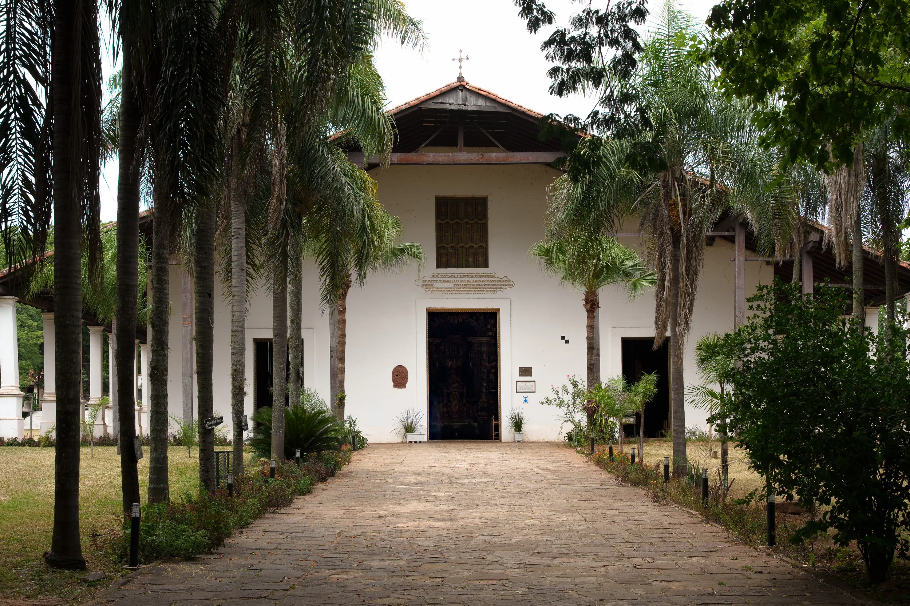
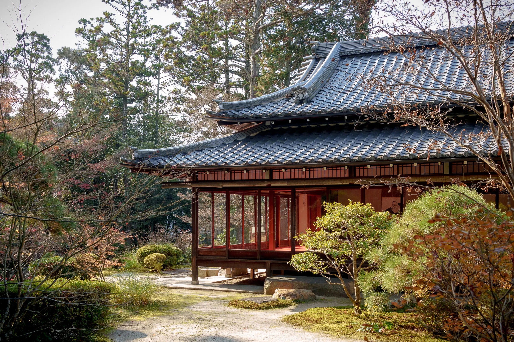

Photography
 Architectural Photography / Monasterio de San Miguel
Architectural Photography / Iglesia de Yaguarón
Architectural Photography / Japanese Sanctuary
Architectural Photography / Monasterio de San Miguel
Architectural Photography / Iglesia de Yaguarón
Architectural Photography / Japanese Sanctuary
 Hospitality Brand Production / Bellamar Hotel
Hospitality Brand Production / Bellamar Hotel

